산업안전지도사 (2013-04-20 기출문제)
1과목: 산업안전보건법령
1. 산업안전보건기준에 관한 규칙상 안전난간과 안전방망의 설치요건에 관한 설명이다. ( )안에 들어갈 숫자로 옳은 것은?
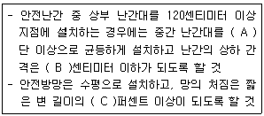
- A: 2, B: 60, C: 10
- A: 2, B: 60, C: 12
- A: 2, B: 75, C: 10
- A: 3, B: 75, C: 10
- A: 3, B: 75, C: 12
(정답률: 100%)

2. 산업안전보건기준에 관한 규칙상 폭발ㆍ화재 및 위험물누출에 의한 위험방지에 관한 설명으로 옳은 것만을 모두 고른 것은?
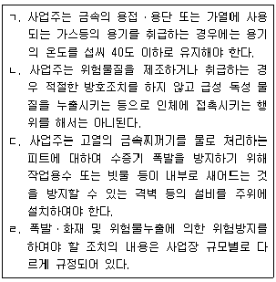
- ㄱ, ㄴ
- ㄱ, ㄷ
- ㄱ, ㄹ
- ㄴ, ㄷ
- ㄷ, ㄹ
(정답률: 80%)
3. 산업안전보건법령상 건강진단에 관한 설명으로 옳지 않은 것은?
- 사무직 종사 근로자 외의 근로자는 1년에 1회 이상 일반건강진단을 실시하여야 한다.
- 상시 사용하는 근로자 중 사무직에 종사하는 근로자란 공장 또는 공사현장과 같은 구역에서 서무ㆍ인사ㆍ경리ㆍ판매ㆍ설계 등의 사무업무에 종사하는 근로자를 말하며, 판매업무에 직접 종사하는 근로자는 제외한다.
- 학교보건법에 따른 건강검사를 받은 근로자는 산업안전보건법 시행규칙에 따른 일반건강진단을 실시한 것으로 본다.
- 사업주는 본인의 동의 없이는 개별 근로자의 건강진단 결과를 공개하여서는 아니된다.
- 사업주는 일반건강진단 또는 특수건강진단을 정기적으로 실시하도록 하되, 건강진단의 실시시기를 안전보건관리규정 또는 취업규칙에 명기하여야 한다.
(정답률: 85%)
4. 산업안전보건법령상 석면에 관한 설명으로 옳지 않은 것은?
- 석면해체ㆍ제거작업의 완료 후 해당 작업장의 공기 중 석면농도는 1세제곱센티미터당 0.01개 이하이어야 한다.
- 석면을 사용하는 작업장소의 바닥재료는 불침투성재료를 사용하고 청소하기 쉬운 구조로 하여야 한다.
- 근로자가 석면을 뿜어서 칠하는 작업을 할 경우 사업주는 석면이 흩날리지 않도록 습기를 유지하거나 밀폐 또는 국소배기장치설치 등 필요한 대책을 강구해야 한다.
- 석면 취급작업을 마친 근로자의 오염된 작업복은 석면 전용 탈의실에서만 벗도록 하여야 한다.
- 석면을 사용하는 장소는 다른 작업장소와 격리하여야 한다.
(정답률: 100%)
5. 산업안전보건기준에 관한 규칙상 소음에 의한 건강장해예방조치를 규정한 내용으로 옳지 않은 것은?
- “소음작업”이란 1일 8시간 작업을 기준으로 85데시벨 이상의 소음이 발생하는 작업을 말한다.
- 100데시벨 이상의 소음이 1일 2시간 이상 발생하는 작업은 “강렬한 소음작업”이다.
- 소음이 1초 이상의 간격으로 발생하는 작업으로서 120데시벨을 초과하는 소음이 1일 1만회 이상 발생하는 작업은 “충격소음작업”이다.
- 사업주는 근로자가 소음작업, 강렬한 소음작업 또는 충격소음작업에 종사하는 경우 청력보호구를 지급하고 착용하도록 하여야 한다.
- 소음의 작업환경측정 결과 소음수준이 85데시벨을 초과하는 사업장의 사업주는 청력보존 프로그램을 수립하여 시행하여야 한다.
(정답률: 73%)
6. 다음 내용 중 산업안전보건법령상 산업위생지도사가 타인의 의뢰를 받아 수행할 수 있는 직무인 것은 모두 몇 개인가?
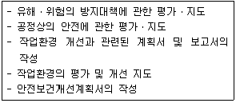
- 1개
- 2개
- 3개
- 4개
- 5개
(정답률: 83%)
7. 산업안전보건법령상 산업재해 발생 보고 및 기록에 관한 설명으로 옳은 것은?
- 사업주는 산업재해로 3일 이상의 요양이 필요한 부상을 입은 사람이 발생한 경우에는 해당 산업재해가 발생한 날부터 15일 이내에 산업재해조사표를 작성하여 제출하여야 한다.
- 사업주는 산업재해가 발생한 때에는 근로자의 인적사항, 재해 발생의 원인 및 과정 등을 기록ㆍ보존하여야 하는데, 재발방지계획은 거기에 포함되지 않는다.
- 근로자가 산업재해보상보험법에 따른 요양급여를 신청한 경우라도 사업주는 관할 지방고용노동관서의 장에게 산업재해조사표를 제출하여야 한다.
- 건설업을 영위하는 사업주는 산업재해조사표에 근로자 대표의 확인을 받아야 하며, 그 기재 내용에 대하여 근로자 대표의 이견이 있는 경우에는 그 내용을 첨부하여야 한다.
- 사망자 1명과 직업성질병자가 동시에 5명 발생한 산업재해의 경우 사업주는 재해발생의 개요 및 피해 상황 등을 지체 없이 관할 지방고용노동관서의 장에게 보고하여야 한다.
(정답률: 89%)
8. 산업안전보건법령상 안전보건관리책임자가 총괄ㆍ관리해야 할 업무에 해당하는 것만을 모두 고른 것은?
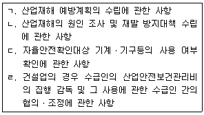
- ㄱ, ㄴ
- ㄱ, ㄷ
- ㄱ, ㄹ
- ㄴ, ㄷ
- ㄷ, ㄹ
(정답률: 87%)
9. 산업안전보건법령상 물질안전보건자료 및 경고표시에 관한 설명으로 옳은 것은?
- 대상화학물질을 양도하거나 제공하는 자는 물질안전보건자료 제공의무가 없다.
- 약사법에 따른 의약품은 물질안전보건자료의 작성 대상이다.
- 탱크로리, 파이프라인에 의하여 대상화학물질을 양도하거나 제공하는 경우에는 경고표시 기재 항목을 적은 자료를 제공할 필요가 없다.
- 사업주는 새로운 대상화학물질이 도입된 경우 근로자에게 물질안전보건자료에 관한 교육을 매번 실시할 필요가 없다.
- 사업주는 물질안전보건자료에 관한 교육을 할 때 유해성ㆍ위험성이 유사한 대상 화학물질을 그룹별로 분류하여 교육할 수 있다.
(정답률: 100%)
10. 산업안전보건법령상 유해ㆍ위험방지계획서 또는 공정안전보고서에 관한 설명으로 옳은 것은?
- 전기장비 제조업으로서 전기 계약 용량이 200킬로와트 이상인 사업은 유해ㆍ위험 방지계획서 제출 대상 업종에 포함되어 있다.
- 깊이 5미터 이상의 굴착공사를 하는 경우 사업주는 건설안전 분야 산업안전지도사의 의견을 들은 후 유해ㆍ위험방지계획서를 제출하여야 한다.
- 유해ㆍ위험방지계획서에 대한 심사결과 사업주는 지방고용노동관서의 장으로부터 공사착공중지명령 또는 계획변경명령을 받은 경우에는 계획서를 보완하거나 변경하여 한국산업안전보건공단에 제출하여야 한다.
- 사업주는 공정안전보고서 심사결과를 근로자에게 알려주어야 한다.
- 사업주는 유해ㆍ위험설비의 설치ㆍ이전 또는 주요 구조부분의 변경공사의 착공일전까지 공정안전보고서를 2부 작성하여 한국산업안전보건공단에 제출하여야 한다.
(정답률: 75%)
11. 산업안전보건법령상 안전ㆍ보건교육에 관한 설명으로 옳은 것은?
- 사무직 종사 근로자는 정기교육 대상이 아니다.
- 관리감독자의 지위에 있는 사람은 연간 8시간 이상의 교육을 받아야 한다.
- 작업내용 변경시 일용근로자를 제외한 근로자의 안전ㆍ보건교육은 1시간 이상 실시하여야 한다.
- 채용 시의 근로자에 대한 안전ㆍ보건교육은 고용형태에 관계없이 교육시간이 동일하다.
- 안전보건관리책임자도 고용노동부장관이 실시하는 안전ㆍ보건에 관한 직무교육으로서 신규교육과 보수교육을 받아야 한다.
(정답률: 93%)
12. 산업안전보건기준에 관한 규칙상 근골격계부담작업으로 인한 건강장해 예방에 관한 설명으로 옳지 않은 것은?
- 사업주는 유해요인 조사를 하는 경우에 근로자와의 면담, 증상 설문조사, 인간공학적 측면을 고려한 조사 등 적절한 방법으로 하여야 한다.
- 사업주는 근골격계부담작업을 하는 경우에 근골격계질환 발생 시의 대처요령에 대해 근로자에게 알려야 한다.
- 사업주는 근골격계질환 예방관리 프로그램을 작성ㆍ시행할 경우에 근로자대표의 동의를 받아야 한다.
- 사업주는 유해요인 조사에 근로자대표 또는 해당 작업 근로자를 참여시켜야 한다.
- 사업주는 근로자가 5킬로그램 이상의 중량물을 들어올리는 작업을 하는 경우에 주로 취급하는 물품에 대하여 근로자가 쉽게 알 수 있도록 물품의 중량과 무게중심에 대하여 작업장 주변에 안내표시를 하여야 한다.
(정답률: 77%)
13. 산업안전보건기준에 관한 규칙상 밀폐공간 내 작업에 관한 설명으로 옳은 것은?
- “산소결핍”이란 공기 중의 산소농도가 18퍼센트 미만인 상태를 말한다.
- 밀폐공간 보건작업 프로그램에는 작업시작 전ㆍ후 공기상태가 적정한지를 확인하기 위한 측정ㆍ평가, 방독마스크의 착용과 관리에 대한 내용이 포함되어야 한다.
- 근로자가 밀폐공간에서 작업을 하는 경우 밀폐공간 보건작업 프로그램을 수립하여 시행하여야 하는 주체는 보건관리자 선임의무가 있는 사업주에 한한다.
- 사업주는 근로자가 밀폐공간에서 작업을 하는 경우 상시 작업상황을 감시할 수있는 감시인을 지정하여 밀폐공간 내부에 배치하여야 한다.
- 사업주는 밀폐공간에 종사하는 근로자에 대하여 응급처치 등 긴급 구조훈련을 1년에 1회 이상 주기적으로 실시하여야 한다.
(정답률: 96%)
14. 산업안전보건법령상 제조ㆍ수입ㆍ양도ㆍ제공 또는 사용이 금지되는 유해물질이 아닌 것은?
- 염화비닐
- 청석면 및 갈석면
- 베타-나프틸아민과 그 염
- 폴리클로리네이티드터페닐(PCT)
- 악티노라이트석면, 안소필라이트석면 및 트레모라이트석면
(정답률: 100%)
15. 산업안전보건법령에 규정된 용어에 관한 설명으로 옳은 것은?
- “근로자”란 직업의 종류를 불문하고 임금ㆍ급료 기타 이에 준하는 수입에 의하여 생활하는 자를 말한다.
- “작업환경측정”이란 작업환경 실태를 파악하기 위하여 해당 근로자 또는 작업장에 대하여 고용노동부장관이 지정하는 자가 측정계획을 수립하여 시료를 채취하고 분석ㆍ평가하는 것을 말한다.
- 2개월 이상의 요양이 필요한 부상자가 동시에 3명이상 발생한 재해는 “중대재해”에 포함된다.
- “안전ㆍ보건진단”이란 산업재해를 예방하기 위하여 잠재적 위험성을 발견하고 그 개선대책을 수립할 목적으로 고용노동부장관이 지정하는 자가 하는 조사ㆍ평가를 말한다.
- “사업주”란 근로기준법상의 사용자를 말한다.
(정답률: 80%)
16. 다음의 경우 산업안전보건법령상 사업장에 선임하여야 할 안전ㆍ보건관리자에 관한 설명으로 옳지 않은 것은?
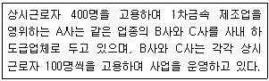
- 도급인 A와 수급인 B, 수급인 C는 각각 안전관리자 1명씩 총 3명의 안전관리자를 선임하는 것이 원칙이다.
- 도급인 A가 자신의 근로자수 400명에 대한 안전관리자 1명과 수급인 BㆍC의 근로자수 200명에 대한 안전관리자 1명을 추가로 선임하였다면 수급인 BㆍC는 별도의 안전관리자를 선임하지 않아도 된다.
- 도급인 A와 수급인 B, 수급인 C는 각각 보건관리자 1명씩 총 3명의 보건관리자를 선임하는 것이 원칙이다.
- 도급인 A가 자신의 근로자수 400명에 대한 보건관리자 1명과 수급인 BㆍC의 근로자수 200명에 대한 보건관리자 1명을 추가로 선임하였다면 수급인 BㆍC는 별도의 보건관리자를 선임하지 않아도 된다.
- 위 ①항의 경우 도급인 A와 수급인 BㆍC가 안전관리자를 선임할 때 건설안전기사 자격을 가진 사람을 안전관리자로 선임하여서는 아니된다.
(정답률: 77%)
17. 산업안전보건법령상 안전보건관리규정에 대한 설명으로 옳은 것은?
- 안전보건관리규정 중 당해 사업장에 적용되는 단체협약 및 취업규칙에 반하는 부분에 관하여는 안전보건관리규정을 우선 적용한다.
- 안전보건관리규정에는 하도급 사업장에 대한 안전ㆍ보건관리에 관한 사항이 포함되어야 한다.
- 사업주는 안전보건관리규정을 작성하여야 할 사유가 발생한 날부터 60일 이내에 안전보건관리규정을 작성하여야 한다.
- 사업주는 안전보건관리규정을 변경하여야 할 사유가 발생한 경우 해당 사유가 발생한 날부터 60일 이내에 안전보건관리규정을 변경하여야 한다.
- 사업주가 안전보건관리규정을 작성하거나 변경할 때에 산업안전보건위원회가 설치되어 있지 아니한 사업장의 경우에는 근로자대표에게 통보만 하면 된다.
(정답률: 81%)
18. 산업안전보건법령상 안전검사에 관한 설명으로 옳지 않은 것은?
- 프레스, 전단기 등 유해ㆍ위험기계등을 사용하는 사업주는 유해ㆍ위험기계등의 안전에 관한 성능이 검사기준에 맞는지에 대하여 안전검사를 받아야 한다.
- 위 ①항의 경우 유해ㆍ위험기계등을 사용하는 사업주와 소유자가 다른 경우에는 해당 유해ㆍ위험기계등을 사용하는 사업주가 안전검사를 받아야 한다.
- 안전검사 대상인 크레인, 리프트 및 곤돌라의 검사주기는 사업장에 설치가 끝난날부터 3년 이내에 최초 안전검사를 실시하되, 그 이후부터 2년마다 실시하여야 한다.
- 위 ③항의 안전검사 대상 기계ㆍ기구를 건설현장에서 사용하는 경우에는 최초로 설치한 날부터 6개월마다 안전검사를 실시하여야 한다.
- 안전검사 대상인 프레스, 전단기의 검사주기는 사업장에 설치가 끝난 날부터 3년 이내에 최초 안전검사를 실시하되, 그 이후부터 2년마다 실시하여야 한다.
(정답률: 100%)
19. 산업안전보건기준에 관한 규칙상 근로자의 추락위험 예방에 관한 설명으로 옳지 않은 것은?
- 안전방망의 설치위치는 가능하면 작업면으로부터 가까운 지점에 설치하여야 하며, 작업면으로부터 망의 설치지점까지의 수직거리는 10미터를 초과하지 아니하여야 한다.
- 안전난간은 상부 난간대, 중간 난간대, 발끝막이판 및 난간기둥으로 구성하여야 한다.
- 안전난간은 구조적으로 가장 취약한 지점에서 가장 취약한 방향으로 작용하는 50킬로그램 이상의 하중에 견딜 수 있는 구조이어야 한다.
- 사업주는 높이 1미터 이상인 계단의 개방된 측면에 안전난간을 설치하여야 한다.
- 사업주는 높이 또는 깊이 2미터 이상의 추락할 위험이 있는 장소에서 작업하는 근로자에게 안전대를 지급하고 착용하도록 하여야 한다.
(정답률: 100%)
20. 산업안전보건법령상 작업환경측정에 대한 설명으로 옳은 것은?
- 작업환경측정 대상 작업장은 작업환경측정 대상 유해인자가 존재하는 작업장을 말한다.
- 작업환경측정을 할 때에는 모든 측정은 반드시 개인시료채취방법으로 하여야 한다.
- 작업장 또는 작업공정이 신규로 가동되거나 변경되어 작업환경측정 대상 작업장이 된 경우에는 지체없이 작업환경측정을 하여야 한다.
- 발암성물질인 화학적 인자의 측정치가 노출기준을 초과하는 경우 해당 사업장 전체에 대하여 그 측정일부터 3개월에 1회 이상 작업환경측정을 하여야 한다.
- 사업주는 작업환경측정 결과 노출기준을 초과한 작업공정이 있는 경우 개선 등 적절한 조치를 하고 시료채취를 마친 날부터 60일 이내에 해당 작업공정의 개선을 증명할 수 있는 서류 또는 개선계획을 관할 지방고용노동관서의 장에게 제출하여야 한다.
(정답률: 58%)
21. 산업안전보건법령상 명예산업안전감독관에 대한 설명으로 옳지 않은 것은?
- 고용노동부장관은 산업안전보건위원회 설치 대상 사업의 근로자 중에서 근로자대표가 사업주의 의견을 들어 추천하는 사람을 명예산업안전감독관으로 위촉할 수 있다.
- 위 ①항의 명예산업안전감독관은 법령 및 산업재해 예방정책의 개선을 건의할 수 있다.
- 명예산업안전감독관의 임기는 2년으로 하되, 연임할 수 있다.
- 고용노동부장관은 명예산업안전감독관의 활동을 지원하기 위하여 수당 등을 지급할 수 있다.
- 고용노동부장관은 근로자대표가 사업주의 의견을 들어 위촉된 명예산업안전감독관의 해촉을 요청한 경우 그를 해촉할 수 있다.
(정답률: 80%)
22. 산업안전보건법령상 산업안전보건위원회에 대한 설명으로 옳지 않은 것은?
- 산업안전보건위원회의 위원장은 위원 중에서 호선(互選)하며, 이 경우 근로자위원과 사용자위원 중 각 1명을 공동위원장으로 선출할 수 있다.
- 근로자위원 중 근로자대표는 근로자의 과반수로 조직된 노동조합이 있는 경우에는 그 노동조합의 대표자를 말한다.
- 위 ②항의 경우 근로자의 과반수로 조직된 노동조합이 없는 경우에는 근로자의 과반수를 대표하는 사람을 말한다.
- 유해ㆍ위험사업의 대표자가 사용자위원을 지명하는 경우에는 해당 사업장의 해당 부서의 장을 반드시 사용자위원으로 지명하여야 한다.
- 산업안전보건위원회의 회의는 근로자위원 및 사용자위원 각 과반수의 출석으로 시작하고 출석위원 과반수의 찬성으로 의결한다.
(정답률: 100%)
23. 산업안전보건법령상 근로자의 보건관리에 관한 설명으로 옳지 않은 것은?
- 사업주는 감염병, 정신병 또는 근로로 인하여 병세가 크게 악화될 우려가 있는 질병으로서 고용노동부령으로 정하는 질병에 걸린 자에게는 의사의 진단에 따라 근로를 금지하거나 제한하여야 한다.
- 사업주는 근로가 금지되거나 제한된 근로자가 건강을 회복하였을 때에는 지체 없이 취업하게 하여야 한다.
- 사업주는 정신신경증, 알코올중독, 신경통, 그 밖의 정신신경계의 질병이 있는 사람은 근로를 금지시켜야 한다.
- 사업주는 근로를 금지하거나 근로를 다시 시작하도록 하는 경우에는 미리 의사인 보건관리자, 산업보건의 또는 건강진단을 실시한 의사의 의견을 들어야 한다.
- 관할 지방고용노동관서의 장이 역학조사의 필요성을 인정하는 경우에는 산업안전보건위원회의 의결이나 상대방의 동의 없이 역학조사를 할 수 있다.
(정답률: 89%)
24. 산업안전보건법령상 근로자대표의 자료요청에 대하여 사업주가 응하지 않아도 되는 것만을 모두 고른 것은?
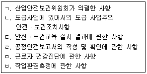
- ㄱ, ㄴ, ㄷ
- ㄱ, ㅁ, ㅂ
- ㄴ, ㄷ, ㄹ
- ㄷ, ㄹ, ㅁ
- ㄹ, ㅁ, ㅂ
(정답률: 63%)
25. 산업안전보건기준에 관한 규칙상 근로자의 위험을 예방하기 위하여 규정된 내용으로 옳은 것은?
- 거푸집 동바리로 사용하는 파이프서포트를 2개 이상 이어서 사용하지 않도록 하여야 한다.
- 콘크리트를 타설하는 경우에는 지지강도가 높게 나오게 중앙부위에 집중적으로 타설하여야 한다.
- 흙막이 등 기울기면의 붕괴방지 조치를 하지 않고 풍화암으로 이루어진 지반을 굴착하는 경우 굴착면의 기울기는 1 : 0.5에 맞도록 하여야 한다.
- 위 ③항의 경우 습지인 보통 흙으로 이루어진 지반을 굴착하는 경우에는 굴착면의 기울기는 1 : 0.5 ~ 1 : 1에 맞도록 하여야 한다.
- 흙막이 등 기울기면의 붕괴방지 조치를 하지 않은 상태에서 굴착면의 경사가 달라서 기울기를 계산하기 곤란한 경우 해당 굴착면에 대하여 굴착면의 기울기 기준에 따라 붕괴의 위험이 증가하지 않도록 해당 각 부분의 경사를 유지하여야 한다.
(정답률: 94%)
2과목: 산업안전일반
26. 인간-기계시스템은 수동시스템, 기계화시스템 및 자동화시스템으로 분류할 수있다. 다음 설명 중 옳지 않은 것은?
- 자동화시스템에서는 기계가 의사결정을 한다.
- 수동시스템에서는 인간의 통제를 받아 제품을 생산하는 것이 기계의 기능이다.
- 기계화시스템에서는 인간의 통제를 받아 제품을 생산하는 것이 기계의 기능이다.
- 기계화시스템에서 표시장치로부터 정보를 얻어 조종장치를 통해 기계를 통제하는 것은 인간의 기능이다.
- 빨래를 하는 경우 수동시스템은 사람이 직접 하는 것이고, 자동화시스템은 사람이 물과 세제를 세탁기에 넣어 주면 자동으로 세탁하고 탈수하는 것이다.
(정답률: 86%)
27. 국제노동기구(ILO)의 산업재해 정도에 따른 분류에 관한 설명으로 옳지 않은 것은?
- “영구 전노동 불능”은 부상의 결과로 근로의 기능을 완전히 영구적으로 잃는 상해를 말하며, 신체장애 등급은 1∼3등급에 해당된다.
- “일시 일부노동 불능”은 의사의 진단으로 일정 기간 정규 노동에는 종사할 수 없으나 휴무 상태가 아닌 일시 가벼운 노동에 종사할 수 있는 상해를 말한다.
- “일시 전노동 불능”은 의사의 진단으로 일정 기간 정규 노동에 종사할 수 없는 상해를 말한다.
- “영구 일부노동 불능”은 부상의 결과로 신체의 일부가 영구적으로 노동 기능을 상실한 상해를 말하며, 신체장애 등급은 4∼16등급에 해당된다.
- “구급(응급)조치”는 응급처치 또는 1일 미만의 자가 치료를 받고, 그 후부터 정상작업에 임할 수 있는 상해를 말한다.
(정답률: 94%)
28. 신뢰성시험에 있어 가속수명시험에 관한 설명으로 옳은 것은?
- 가속수명시험시간이 와이블(Weibull) 분포를 따르는 경우, 가속계수의 값만 알면 가속시험 데이터에서 구한 평균고장률로부터 정상조건에서의 평균고장률을 구할 수있다.
- 가속시험 데이터가 대수정규분포를 따른다면, 가속시험 때와 정상시험 때의 형상모수는 다르게 되므로 형상모수에 가속계수를 곱하여야 한다.
- 주기적으로 스트레스를 증가시키면서 가급적 모든 샘플이 고장이 날 때까지 행하는 가속수명시험을 계단형 스트레스(step stress) 시험이라 한다.
- 온도 외에 전압 또는 습도 등 다른 스트레스까지 포함시킨 모델로는 아레니우스(Arrhenius) 모델이 있다.
- 스트레스로서 온도만을 고려하는 대표적인 모델로는 아이링(Eyring) 모델이 있다.
(정답률: 73%)
29. A 회사의 검사자는 이산적 직무인 부품의 내경검사 작업을 하루에 300개씩 실시하고 있다. 이 중에서 불량품을 10개 발견하여 290개를 원청회사에 납품하였고, 원청회사에서의 입고검사에서 30개가 더 발견되었다고 통보가 왔다. 원청회사에서의 검사가 완벽하다고 가정할 경우 이 검사자의 인간신뢰도(human reliability)는 얼마인가?(단, 소수점 셋째 자리에서 반올림한다.)
- 0.10
- 0.13
- 0.87
- 0.90
- 0.93
(정답률: 61%)
30. A 회사에서 생산하는 전자부품의 전자회로는 시스템의 안전을 위하여 그림과 같이 5개의 부품 중 3개만 작동하면 시스템이 정상적으로 가동되는 구조를 갖추고 있다. 동일하고 상호독립적인 각 부품의 고장률을 λ라고 할 때, 다음 중 신뢰도를 구하는 모델로 옳은 것은?
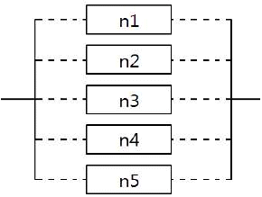
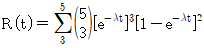
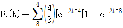
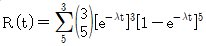
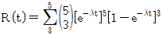
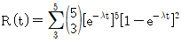
(정답률: 84%)
31. 다음은 결함수분석(FTA)법에 의한 재해 사례 연구에 관한 내용이다. 연구 절차를 올바른 순서대로 나열한 것은?
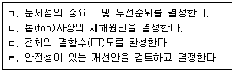
- ㄱ → ㄴ → ㄷ → ㄹ
- ㄱ → ㄷ → ㄴ → ㄹ
- ㄴ → ㄱ → ㄷ → ㄹ
- ㄴ → ㄱ → ㄹ → ㄷ
- ㄷ → ㄱ → ㄹ → ㄴ
(정답률: 77%)
32. C/R비(Control-Response Ratio)에 관한 설명으로 옳지 않은 것은?
- C/R비의 값은 화면상의 이동거리와는 반비례한다.
- C/R비의 값이 크다는 것은 조종장치가 민감하다는 의미이다.
- 인간-기계시스템을 설계할 때에는 조종장치의 이동시간과 조종시간을 고려해야 한다.
- C/R비의 값이 작으면 조종장치의 조종시간이 많이 소요되고 이동시간은 적게 소요된다.
- C/R비는 모니터를 보면서 조종장치를 사용하는 작업에 적용한다.
(정답률: 80%)
33. 파레토(Pareto)도에 대한 설명으로 옳은 것만을 모두 고른 것은?
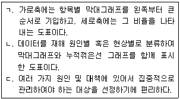
- ㄱ
- ㄱ, ㄴ
- ㄱ, ㄷ
- ㄴ, ㄷ
- ㄱ, ㄴ, ㄷ
(정답률: 83%)
34. 안전교육의 3단계 중에서 2단계에 해당되는 교육과 그 특성을 올바르게 나타낸 것은?
- 안전기능교육 : 습관과 형성
- 안전기능교육 : 경험과 적응
- 안전지식교육 : 습득과 전달
- 안전지식교육 : 경험과 적응
- 안전태도교육 : 습관과 형성
(정답률: 85%)
35. 안전과 위험에 대한 개념 설명으로 옳지 않은 것은?
- 안전이란 재해와 위험이 없는 바람직한 상태에 도달하는 것을 말한다.
- 재해가 발생하는 것은 위험에 의한 결과적인 현상을 말한다.
- 위험이란 근로자가 작업장소에서 접촉하는 물건 또는 환경과의 상호관계를 나타내는 것으로 그 결과로 부상이 발생하는 것이다.
- 안전에 대응하는 반대 개념은 재해가 발생하는 것이다.
- 안전은 상해, 손실, 위해 또는 위험에 노출되는 것으로부터의 자유를 말한다.
(정답률: 75%)
36. 안전교육방법에 관한 설명으로 옳은 것은?
- ATT(American Telephone & Telegram Co.)는 대상 계층이 한정되어 있고, 먼저 훈련을 받은 자는 직급에 관계없이 훈련을 받지 않은 자에 대하여 지도자가 될수 있다.
- OJT(On the Job Training)는 외부 전문가를 강사로 초빙하여 직장의 설정에 맞게 실제적 훈련이 가능하다.
- Off JT(Off the Job Training)는 훈련에만 전념하게 하고 교육훈련목표에 대해 집단적 노력을 모을 수 있다.
- TWI(Training Within Industry)는 주로 제일선 감독자를 교육대상자로 하며 교육내용은 작업방법훈련, 작업지도훈련, 인간관계훈련, 작업안전훈련이 있다.
- MTP(Management Training Program)는 TWI 보다 약간 낮은 계층을 목표로 하고, TWI와는 달리 관리문제에 보다 더 치중하고 있다.
(정답률: 82%)
37. 조명에 관한 용어의 설명으로 옳지 않은 것은?
- 광도(luminous intensity)는 단위 입체각당 광원에서 방출되는 광속으로 측정한다.
- 휘도(luminance)는 단위 면적당 표면에 반사 또는 방출되는 빛의 양을 말한다.
- 조도(illuminance)는 어떤 물체의 표면에서 내는 빛의 양을 말한다.
- 반사율(reflectance)은 휘도와 조도의 비를 말한다.
- 대비(luminance contrast)는 과녁의 휘도와 배경의 휘도 차를 말한다.
(정답률: 69%)
38. 재해 발생 관련 이론에 관한 설명으로 옳은 것은?
- 자베타키스(Zabetakis)의 사고연쇄성이론 5단계 중에서 2단계는 '작전적 에러'이고, 3단계는 '전술적 에러'이다.
- 웨버(Weaver)의 사고연쇄성이론 5단계 중에서 2단계는 '인간의 결함'을 정의하고, '무엇이 재해를 일으켰는지'를 찾으려고 하는 것이다.
- 아담스(Adams)의 사고연쇄성이론 5단계 중에서 3단계는 '에너지 및 위험물의 예기치 못한 폭주'이다.
- 버드(Bird)의 사고연쇄성이론 5단계 중에서 1단계는 '사회적 환경과 유전적 요소'이다.
- 하인리히(Heinrich)의 재해발생이론에서 1단계는 '제어의 부족'이다.
(정답률: 74%)
39. 어떤 설비의 평균고장률이 0.0125회/시간이고, 이 설비에 고장이 발생하면 수리하는데 소요되는 평균시간은 40시간이라고 한다. 다음 설명 중 옳은 것은?(단, 사후보전만 실시한다.)
- 이 설비의 평균수리율은 0.025회/시간이다.
- 이 설비의 가동성은 0.5이다.
- 이 설비의 수명은 지수분포를 따르지 않는다.
- 이 설비를 평균수명만큼 사용한다면 고장이 발생하지 않을 확률은 약 63 % 이다.
- 이 설비를 1,000시간 동안 사용한다면 평균 15회의 고장이 발생하며, 사후수리를 받게 된다.
(정답률: 65%)
40. 다음 중 감성공학에 관한 설명으로 옳지 않은 것은?
- 사람의 느낌(이미지)을 고객이 요구하는 제품의 품질특성으로 변환시키고, 이를 물리적 설계요소로 번역시키는 기술이다.
- 일본의 스포츠카인 '미야타'는 최초의 감성공학 설계가 반영된 제품이다.
- 인간-기계시스템에서 인간과 기계 사이에 정보를 주고받는 휴먼인터페이스 설계가 주요 문제로 대두되고 있다.
- 소비자의 감성에 호소하는 제품을 설계하기 위해서 소비자의 감성적 특성을 반영하는 것이지 신체적 특성을 반영하는 것은 아니다.
- 감성공학 기법으로는 기능전개형, 다변량해석형, 가상현실형이 있다.
(정답률: 93%)
41. NIOSH 들기지침에 관한 설명으로 옳지 않은 것은?
- OWAS, RULA, REBA 등이 평가기법으로 사용된다.
- 초기에는 양손 대칭 작업에만 적용할 수 있었으나, 그 이후에는 비대칭작업, 커플링(coupling) 효과가 추가되었다.
- 이 가이드는 역학적(epidemiological), 생체역학적(biomechanical), 생리학적(physiological), 심물리학적(psychophysical) 기준에 근거하여 개발되었다.
- 권장무게한계(Recommended Weight of Limit)를 계산하여 제시하여 준다.
- 들기작업지수(Lifting Index)를 계산하는데 LI는 실제 작업물의 무게와 권장무게 한계의 비율이며, LI값이 1.0보다 작아야 안전하다.
(정답률: 65%)
42. 어떤 근로자가 빈 드럼통 위에 서서 구조물에 용접작업을 하던 중 용접불똥이 비산되어 열려있는 드럼통 속으로 들어가 잔류 가스가 폭발하였고, 이로 인하여 근로자가 3m 아래로 떨어져 척추를 다쳤다. 다음 중 불안전한 행동에 해당하는 것은?
- 작업 중에 드럼통 속으로 용접불똥이 튀어 들어갔다.
- 드럼통의 마개가 열려있는 채로 방치해 놓았다.
- 드럼통 속에 잔류 가스가 남아 있었다.
- 근로자가 3 m 아래로 떨어져 척추를 다쳤다.
- 드럼통 속의 내용물을 확인하지 않고 빈 드럼통 위에 서서 용접작업을 하였다.
(정답률: 91%)
43. 사상나무분석(ETA)에 대한 의사결정나무(decision tree)가 다음과 같을 때 A, B, C, D, E에 해당하는 값으로 옳지 않은 것은?
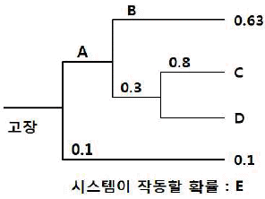
- A = 0.9
- B = 0.7
- C = 0.216
- D = 0.⑤4
- E = 0.9
(정답률: 73%)
44. 고용노동부 고시「사업장 위험성평가에 관한 지침」에서의 위험성평가 방법으로 옳지 않는 것은?
- 안전보건관리책임자는 위험성평가의 실시를 총괄 관리한다.
- 안전관리자, 보건관리자는 위험성평가의 실시를 관리한다.
- 안전관리자, 보건관리자는 유해ㆍ위험요인의 파악, 위험성의 추정, 결정, 위험성 감소대책의 수립ㆍ실행을 한다.
- 해당 작업에 종사하는 근로자는 특별한 사정이 없는 한 해당 작업에 대한 유해ㆍ위험요인을 파악하거나 감소대책을 수립하는데 참여한다.
- 기계ㆍ기구, 설비 등과 관련된 위험성평가에는 해당 기계ㆍ기구, 설비 등에 전문지식을 갖춘 사람을 참여시킨다.
(정답률: 62%)
45. 고용노동부 고시「사업장 위험성평가에 관한 지침」에서의 위험성평가 인정신청에 대한 설명으로 옳은 것은?
- 1년 중 사업수행 기간이 6개월 미만인 일시적인 사업 또는 계절사업을 하는 사업장은 인정신청을 할 수 있다.
- 건설업 중 잔여공사기간이 6개월 미만인 건설공사는 인정신청을 할 수 있다.
- 수급사업장이 산업안전보건법상 안전관리자 또는 보건관리자 선임대상인 경우에는 인정신청에서 수급사업장을 제외할 수 있다.
- 사업의 일부 또는 전부를 도급에 의하여 행하는 사업장은 도급사업장의 사업주가 수급사업장을 일괄하여 인정을 신청할 수 없다.
- 중대재해 등으로 인정이 취소된 날부터 1년이 경과하지 아니한 사업장이라도 인정신청을 할 수 있다.
(정답률: 74%)
46. 연평균근로자수가 250명인 A 사업장의 연간재해발생건수는 75건, 이로 인한 재해자수가 90명이고, 총휴업일수는 3,345일이 발생하였다. 이 사업장의 재해 통계에 대한 설명으로 옳은 것은?(단, 근로자는 1일 8시간씩 연간 280일을 근무하였다.)
- 강도율은 5.97이다.
- 도수율은 160.71이다.
- 연천인율은 360이다.
- 종합재해지수는 29.92이다.
- 이 사업장에서 연천인율과 도수율과의 관계에는 2.4의 상수값이 적용된다.
(정답률: 88%)
47. 교육심리학의 기본이론 중 학습지도의 원리에 해당하지 않는 것은?
- 학습자 스스로 학습에 자발적으로 참여하여야 한다는 원리
- 학습은 계속 이루어져야 한다는 원리
- 학습자가 지니고 있는 각자의 요구와 능력 등에 알맞게 학습활동의 기회를 마련해 주어야 한다는 원리
- 학습을 총합적인 전체로 지도하자는 원리
- 구체적인 사물을 직접 제시하거나 경험을 통해 학습효과를 거둘 수 있다는 원리
(정답률: 80%)
48. 근로자 40명이 근무하는 사출성형제품 생산 공장에 가장 적합한 안전 조직은?
- 안전관리의 계획부터 실시까지 모든 안전업무가 생산라인을 통해 직접적으로 적용되는 조직
- 안전업무를 관장하는 참모를 두고, 안전관리 계획ㆍ조사ㆍ검토 등의 업무와 현장에 기술지원을 담당하도록 편성된 조직
- 안전업무 전담 참모를 두고, 생산라인에서도 부서장으로 하여금 안전업무를 수행하게 하는 조직
- 산업안전보건위원회를 활성화한 조직
- 정보수집과 사업장 특성에 적합한 안전기술 연구개발을 할 수 있는 조직
(정답률: 93%)
49. 교육훈련기법에 관한 설명으로 옳지 않는 것은?
- 강의법은 안전지식의 전달방법으로 초보적인 단계에서 효과가 큰 방법이며, 단시간에 많은 내용을 교육하는 경우에 적합하다.
- 시범은 어떤 기능이나 작업과정을 학습시키기 위해 필요로 하는 분명한 동작을 제시하는 방법이다.
- 반복법은 이미 학습한 내용이나 기능을 반복해서 이야기하거나 실연하도록 하는 방법이다.
- 토의법은 쌍방적 의사전달방식에 의한 교육으로 적극성ㆍ협동성을 기르는데 유효하다.
- 실연법은 실제의 장면이나 상태와 극히 유사한 상태를 인위적으로 만들어 그 속에서 학습하도록 하는 방법이다.
(정답률: 87%)
50. 재해사례 연구방법의 각 단계를 올바르게 설명한 것은?
- “사실의 확인”은 파악된 사실로부터 기준에서 벗어난 문제점을 적출하고 그것이 문제로 된 이유를 분명히 한다.
- “문제점의 발견”은 문제점이 된 사실을 재해요인으로 분석, 검토하고 재해와 관계되는 영향의 정도를 평가한다.
- “근본적 문제점의 결정”은 관리자, 감독자 및 작업자의 권한, 책임 및 직무로 보아 누가 할 것인가, 기준대로 하였는가를 평가하고 판단하여 결정한다.
- “대책의 수립”은 문제점 가운데 재해의 중심이 된 사항과 재해원인을 결정하고 보고한다.
- “대책의 수립”은 사례연구의 전제조건과 재해 상황의 주된 항목에 관하여 파악한다.
(정답률: 84%)
3과목: 기업진단ㆍ지도
51. 테일러(Taylor)의 과학적 관리법(scientific management)에 관한 설명으로 옳은 것만을 모두 고른 것은?
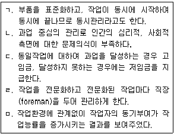
- ㄱ, ㅁ
- ㄷ, ㄹ
- ㄴ, ㄷ, ㄹ
- ㄴ, ㄹ, ㅁ
- ㄱ, ㄷ, ㄹ, ㅁ
(정답률: 56%)
52. 재고의 기능에 따른 분류에 관한 설명으로 옳지 않은 것은?
- 안전재고 : 제품 수요, 리드타임 등의 불확실한 수요에 대비하기 위한 재고
- 분리재고 : 공정을 기준으로 공정전ㆍ후의 재고로 분리될 경우의 재고
- 파이프라인 재고 : 공장에서 물류센터, 물류센터에서 대리점 등으로 이동 중에 있는 재고
- 투기재고 : 원자재 고갈, 가격인상 등에 대비하여 미리 확보해두는 재고
- 완충재고 : 생산 계획에 따라 주기적인 주문으로 주문기간 동안 존재하는 재고
(정답률: 70%)
53. 생산 시스템에 관한 설명으로 옳지 않은 것은?
- 모듈생산시스템(MPS : modular production system)은 단납기화 요구강화와 원가절감을 위하여 부품 또는 단위의 조합에 따라 고객의 다양한 주문에 대응하는 생산 시스템이다.
- 자재소요계획(MRP : material requirements planning)은 주일정계획(기준생산일정)을 기초로 하여 완제품 생산에 필요한 자재 및 구성부품의 종류, 수량 시기 등을 계획하는 시스템이다.
- 적시생산시스템(JIT : just in time)은 제품생산에 요구되는 부품 등 자재를 필요한 시기에 필요한 수량만큼 적기에 생산, 조달하여 낭비요소를 근본적으로 제거하려는 생산 시스템이다.
- 유연생산시스템(FMS : flexible manufacturing system)은 CAD, CAM 및 MRP 등의 기술을 도입, 생산 설비를 빠르게 전환하여 소품종 대량생산을 효율적으로 행하는 시스템이다.
- 셀생산시스템(CMS : cellular manufacturing system)은 숙련된 작업자가 컨베이어라인이 없는 셀(cell) 내부에서 전체공정을 책임지고 완수하는 사람중심의 자율 생산 시스템이다.
(정답률: 74%)
54. 프로젝트 관리에 활용되는 PERT(program evaluation & review technique)와 CPM(critical path method)의 설명으로 옳은 것은?
- PERT는 개개의 활동에 대해 낙관적 시간치, 최빈 시간치, 비관적 시간치를 추정한 후 그들이 정규분포를 이룬다고 가정하여 평균기대 시간치를 구한다.
- CPM은 프로젝트의 완성시간을 앞당기기 위해 최소비용법을 활용하여 주공정상에 위치하는 작업들의 비용관계를 분석하여 소요시간을 줄인다.
- 과거자료나 경험을 기초로 한 PERT는 활동중심의 확정적 시간을 사용하고, 불확실한 작업을 기초로 한 CPM은 단계중심의 확률적 시간 추정치를 사용한다.
- PERT/CPM은 활동의 전후 관계를 명확히 하고 체계적인 일정 및 예상통제로 효율적 진도관리를 위해 간트(Gantt)차트와 같은 도식적 기법을 활용한다.
- PERT/CPM은 TQM(total quality management)과 연계되어 있어 제품 및 서비스에 대한 고객만족 프로세스를 지향하는 프로젝트 관리도구로 적합하다.
(정답률: 48%)
55. 직무와 관련된 설명으로 옳은 것은?
- 직무충실화는 허즈버그(F.Herzberg)가 2요인 이론을 직무에 구체적으로 적용하기 위하여 제창한 것이다.
- 직무분석에는 서열법, 분류법, 점수법, 요소비교법 등의 방법들이 활용된다.
- 직무기술서에는 직무수행에 요구되는 기능, 지식, 육체적 능력과 교육수준이 기술 되어 있다.
- 직무명세서에는 직무가치와 직무확대에 대한 구체적인 지침이 제시되어 있다.
- 직무평가의 1차적 목적은 직무기술서나 직무명세서를 작성하는 것이며, 2차적으로는 조직, 인사관리를 위한 자료를 제공하는 것이다.
(정답률: 34%)
56. 커뮤니케이션과 의사결정에 관한 설명으로 옳은 것은?
- 암묵지를 체계적, 조직적으로 형식지화한다고 하여도 의사결정의 가치창출 수준은 높아지지 않는다.
- 커뮤니케이션 효과를 높이기 위하여 메시지 전달자는 공식 서신, 전자우편, 전화, 직접 대면 등 다양한 방식 중 한 가지 방식에 집중할 필요가 있다.
- 커뮤니케이션의 문제 상황이 복잡한 경우 공식적인 수치와 공식적 서신이 소통방식으로 적합하다.
- 공식적인 서신과 공식적인 수치는 대면적 의사소통에 비하여 의미있는 정보를 전달할 잠재력이 높다.
- 제한된 합리성이론에 따르면 '의사결정자가 현 상태에 만족한다면 새로운 대안모색에 나서지 않는다' 라고 한다.
(정답률: 54%)
57. 임금관리 공정성에 관한 설명으로 옳은 것은?
- 내부공정성은 노동시장에서 지불되는 임금액에 대비한 구성원의 임금에 대한 공평성 지각을 의미한다.
- 외부공정성은 단일 조직 내에서 직무 또는 스킬의 상대적 가치에 임금 수준이 비례하는 정도를 의미한다.
- 직무급에서는 직무의 중요도와 난이도 평가, 역량급에서는 직무에 필요한 역량 기준에 따른 역량 평가에 따라 임금수준이 결정된다.
- 개인공정성은 다양한 직무 간 개인의 특질, 교육정도, 동료들과의 인화력, 업무몰입수준 등과 같은 개인적 특성이 임금에 반영되는 정도를 의미한다.
- 조직은 조직구성원에 대한 면접조사를 통하여 자사 임금수준의 내부, 외부 공정성 수준을 평가할 수 있다.
(정답률: 74%)
58. 막스 베버(M. Weber)가 제시한 관료제의 특징은?
- 조직의 활동을 합리적으로 조정하기 위해서는 업무처리를 위한 절차가 명확하게 규정되어야 한다.
- 조직구성원 간 의사소통의 활성화를 위해 수평적 조직구조를 선호한다.
- 환경에 대한 적절한 대응을 위해 조직구성원 간의 정보공유를 중시한다.
- '기계적 관료제'라 불리며 복잡한 환경의 대규모 조직에 효과적이다.
- 하급자는 상급자의 감독과 통제 하에 놓이게 되나 성과 평가를 할 때에는 하급자도 상급자의 평가과정에 참여한다.
(정답률: 83%)
59. BSC(Balanced Score Card)에 관한 설명으로 옳지 않은 것은?
- 내부 프로세스 관점과 학습 및 성장 관점도 평가의 주요 관점이다.
- 재무적 관점 이외에 고객관점도 평가의 주요 관점이다.
- 로버트 카플란(R. Kaplan)과 노튼(D. Norton)이 제안한 성과 평가 방식이다.
- 균형잡힌 성과 측정을 위한 것으로 대개 재무와 비재무지표, 결과와 과정, 내부와 외부, 노와 사 간의 균형을 추구하는 도구이다.
- 전략 모니터링 또는 전략 실행을 관리하기 위한 도구로 활용하는 경우에는 성과평가 결과를 보상에 연계시키지 않는 것이 바람직하다는 견해가 있다.
(정답률: 50%)
60. A과장은 근무평정을 할 때 자신의 부하직원 B가 평소 성실하다는 이유로 자신이 직접 관찰하지 않아서 잘 모르는 B의 창의성, 도덕성, 기획력 등을 모두 높게 평가하였다. 이러한 경우 A과장은 어떤 평정오류를 범하고 있는가?
- 관대화오류
- 후광오류
- 엄격화오류
- 중앙집중오류
- 대비오류
(정답률: 73%)
61. 직무만족의 선행변인에 관한 설명으로 옳은 것은?
- 통제소재에서 내재론자들은 외재론자들보다 자신들의 직무에 대해 더 만족한다.
- 직무특성과 직무만족간의 상관은 질문지로 측정한 연구에서는 나타나지 않았다.
- 집단주의적 아시아 문화권에서는 직무특성과 직무만족간에 상관이 높은 것으로 나타났다.
- 급여만족은 분배공정성보다 절차공정성이 더 밀접한 관련이 있다.
- 직무특성 차원과 직무만족간의 상관을 산출해 본 결과 직무만족과 가장 낮은 상관을 나타내는 직무특성은 기술 다양성이었다.
(정답률: 62%)
62. 사회적 권력(social power)의 유형에 대한 설명으로 옳지 않은 것은?
- 합법권력 : 상사의 직책에 고유하게 내재하는 권력
- 강압권력 : 상사가 징계 해고 등 부하를 처벌할 수 있는 능력
- 보상권력 : 상사가 부하에게 수당, 승진 등 보상해 줄 수 있는 능력
- 전문권력 : 상사가 보유하고 있는 지식과 전문기술 등에 근거하는 능력
- 참조권력 : 상사가 부하에게 규범과 명확한 지침을 전달하고, 문제발생 시 도움을 줄 수 있는 능력
(정답률: 67%)
63. 와르(Warr)의 정신 건강 구성요소에 대한 설명으로 옳지 않은 것은?
- 정서적 행복감 : 쾌감과 각성이라는 두 가지 독립된 차원을 가지고 있다.
- 결단 : 환경적 영향력에 저항하고 자신의 의견이나 행동을 결정할 수 있는 개인의 능력을 의미한다.
- 역량 : 생활에서 당면하는 문제들을 효과적으로 다룰 수 있는 충분한 심리적 자원을 가지고 있는 정도를 의미한다.
- 포부 : 포부수준이 높다는 것은 동기수준과 관계가 있으며, 새로운 기회를 적극적으로 탐색하고, 목표 달성을 위하여 도전하는 것을 의미한다.
- 통합된 기능 : 목표달성이 어려울 때 느끼는 긴장감과 그렇지 않을 때 느끼는 이완감 사이에 조화로운 균형을 유지할 수 있는 정도를 의미한다.
(정답률: 53%)
64. 직무분석에 대한 설명으로 옳지 않은 것은?
- 특정직무에 대한 훈련 프로그램을 개발하기 위해서는 직무의 속성과 요구하는 기술을 알아야 한다.
- 효과적인 수행을 하기 위한 직무나 작업장을 설계하는데 도움을 준다.
- 작업시 시간과 노력의 낭비를 제거할 수 있고 안전 저해요소나 위험요소를 발견할 수 있다.
- 특정직무에 대한 직무분석을 하는 기법으로 면접법, 질문지법, 관찰법, 행동기법, 중대사건기법, 투사기법 등이 있다.
- 과업수행에 사용되는 도구, 기구, 수행목적, 요구되는 교육훈련, 임금수준 및 안전저해요소 등에 대한 정보가 포함되어 있다.
(정답률: 85%)
65. 호프스테드(Hofstede)의 문화간 차이를 이해하는 4가지 차원에 속하지 않는 것은?
- 불확실성 회피
- 개인주의-집합주의
- 남성성-여성성
- 신뢰-불신
- 세력차이
(정답률: 67%)
66. 작업장 스트레스의 대처방안 중 조직차원의 기법에 해당하는 것만을 모두 고른 것은?
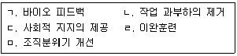
- ㄱ, ㄴ, ㄷ
- ㄱ, ㄷ, ㄹ
- ㄴ, ㄷ, ㅁ
- ㄴ, ㄹ, ㅁ
- ㄷ, ㄹ, ㅁ
(정답률: 77%)
67. 심리검사 결과를 분석할 때 상관계수를 이용하여 검증하는 타당도(validity)를 모두 고른 것은?
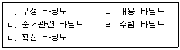
- ㄱ, ㄴ, ㄹ
- ㄱ, ㄴ, ㅁ
- ㄷ, ㄹ, ㅁ
- ㄱ, ㄴ, ㄷ, ㄹ
- ㄱ, ㄷ, ㄹ, ㅁ
(정답률: 54%)
68. 작업자의 수행을 평가할 때 평가자에 의한 관대화 오류가 가장 많이 발생할 수있는 방법은?
- 종업원 순위법
- 강제배분법
- 도식적 평정법
- 정신운동능력 평정법
- 행동기준 평정법
(정답률: 74%)
69. 우리나라와 세계적으로 널리 인용되고 있는 노출기준에 대해 명칭과 제정기관이 옳은 것만을 모두 고른 것은?
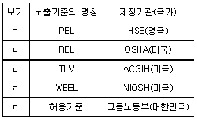
- ㄱ, ㄴ
- ㄱ, ㄷ
- ㄷ, ㄹ
- ㄷ, ㅁ
- ㄹ, ㅁ
(정답률: 63%)
70. 축전지 제조 작업장에서 측정된 5개의 공기 중 카드뮴 시료의 농도가 0.02, 0.08, 0.⑤, 0.25, 0.01 mg/m3일 때, 다음 중 옳은 것은?
- 측정치들은 정규분포를 하고 있다.
- 대표치는 노출기준을 초과하였다.
- 측정치의 변이가 너무 커서 재측정하여야 한다.
- 측정치의 대표치인 기하평균(GM)은 0.082 mg/m3이다.
- 측정치의 변이인 기하표준편차(GSD)는 약 0.098이다.
(정답률: 85%)
71. 작업환경 측정방법에 관한 설명으로 옳은 것은?
- 일반적으로 입자상 물질의 측정결과 단위는 mg/m3 또는 ppm으로 표기한다.
- 시너와 같은 비극성 유기용제를 공기 중에서 시료채취하기 위해서는 실리카겔관을 매체로 사용한다.
- 일반적으로 실내에서 온열환경을 측정하기 위해서는 자연습구온도(NWBT)와 흑구온도(GT)만 측정한다.
- 작업장 근로자의 소음 노출수준을 측정하기 위해 사용하는 지시소음계는 'fast' 모드로 설정하여 측정하여야 한다.
- MCE 여과지를 이용하여 석면을 포집하기 전ㆍ후에 실시하는 시료채취펌프의 유량보정을 실제보다 낮게 평가했다면 최종 측정결과인 공기 중 석면농도는 과소평가하게 된다.
(정답률: 82%)
72. 국소배기시스템에 관한 설명으로 옳은 것은?
- 후드 개구면에서 유해물질까지의 거리를 가깝게 하면 필요환기량이 증가한다.
- 외부식 포집형 후드(capture type hood)의 제어속도를 측정하는 대표적인 기구는 피토관(pitot tube)이다.
- 후드에서 덕트로 공기가 유입될 때의 속도압이 같다면 유입계수(Ce)가 큰 후드 일수록 후드정압이 더 커진다.
- 베르누이 정리는 덕트내에서 유체가 흐를 때, 에너지 손실은 유체밀도, 유체의 속도 및 관의 직경에 비례하며, 유체의 점도에는 반비례한다는 것을 의미한다.
- 사업장에서 탈지제로 사용되는 사염화에틸렌에 대한 국소배기시스템을 설계할 때는 공기보다 비중이 높다는 점을 고려할 필요 없이 후드는 정상적으로 설치하면 된다.
(정답률: 65%)
73. 다음 작업에서 발생하는 유해요인과 건강장애가 옳게 짝지어진 것은?
- 유리가공작업 - 적외선 - 백내장(cataract)
- 페인트칠작업 - 카드뮴 - 백혈병(leukemia)
- 금속세척작업 - 노말헥산 - 진폐증(pneumoconiosis)
- 굴착작업 - 진동 - 사구체신염(glomerular nephritis)
- 목재가공작업 - 목분진 - 간혈관육종(hepatic angiosarcoma)
(정답률: 77%)
74. 유해인자별 건강장애에 관한 설명으로 옳은 것은?
- 아세톤에 만성적으로 노출되면 다발성 신경염이 발생한다.
- 크롬은 손톱 및 구강점막의 색소침착, 모공의 흑점화, 간장애를 일으킨다.
- 삼염화에틸렌은 스펀지의 원료로 사용되며, 화재시 치명적인 가스를 발생시켜 폐수종을 일으킨다.
- 라돈은 방사성 물질 중 유일한 기체상의 물질이며, 폐포나 기관지에 침착되어 β-입자를 방출한다.
- 납에 의한 건강상의 영향은 신경독성, 복통, 혈색소 합성이 저해되어 나타나는 빈혈 증상 등을 들 수 있다.
(정답률: 64%)
75. 산업위생과 관련된 설명 중 옳은 것은?
- 작업환경 중 유해요인으로부터 근로자의 건강을 보호하기 위해 국제적으로 통일 하여 제정한 노출기준은 MAK이다.
- 최근 사업장에 도입되고 있는 위험성 평가(risk assessment)는 산업위생 분야의 작업환경측정과는 관련성이 없는 제도라고 할 수 있다.
- 산업위생은 근로자 개인위생을 기본으로 하고 있으며, 개인의 생활습관 및 체력관리를 통하여 건강을 유지ㆍ관리하는 것을 최우선으로 하고 있다.
- 산업위생의 궁극적 목적은 근로자의 건강을 보호하기 위한 대책을 강구하는 것으로 일반적인 대책의 우선순위는 제거-대체-공학적개선-행정적개선-개인보호구착용 순이다.
- 작업환경 중 건강 유해요인은 크게 물리적, 화학적, 생물학적, 육체적 또는 정신적 부담 요인으로 나눌 수 있으며, 이중에서 산업위생분야는 정신적 부담 요인을 제외한 나머지를 관리대상으로 한다.
(정답률: 72%)